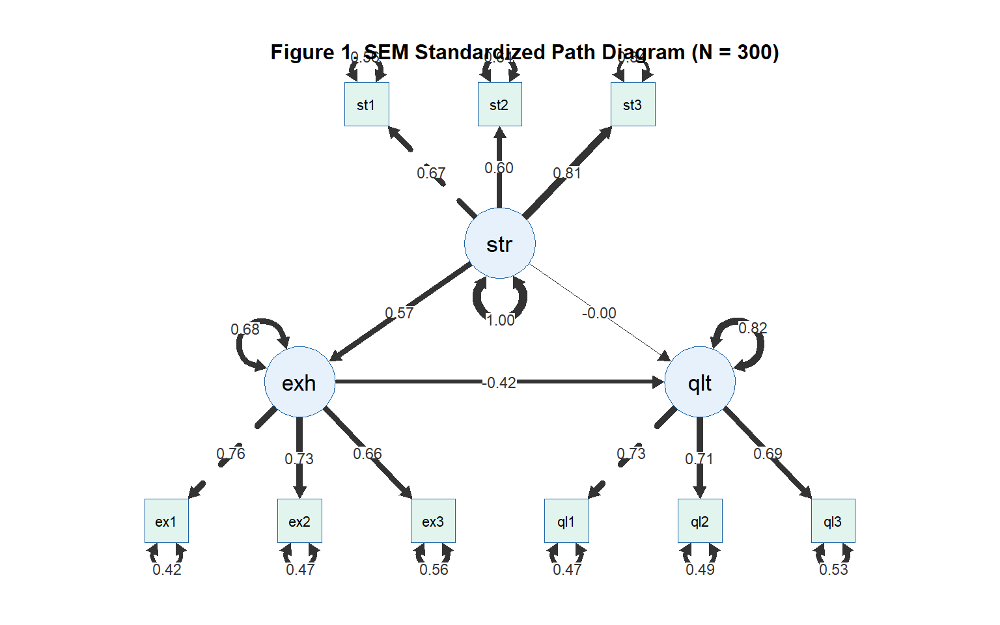

library(tidyverse)
library(gt)
library(lavaan)
library(semPlot)
library(MASS)Topic 14：Structural Equation Modeling (SEM)
CFA, SEM, Path Analysis, Model Fit Indices, APA Reporting
Learning Objectives
- Understand latent variables and the measurement model concept
- Execute confirmatory factor analysis (CFA)
- Build a complete structural equation model (SEM)
- Correctly interpret model fit indices and path coefficients
Statistical Method Map (This Topic)
| X | M | Y | Method |
|---|---|---|---|
| Observed variable | — | Observed variable | Regression (Topic 9) |
| Observed variable | Observed variable | Observed variable | Mediation Analysis (Topic 11) |
| Latent variable | Latent variable | Latent variable | SEM |
Note
SEM integrates two components:
- Measurement model (CFA): How latent variables are measured by observed indicators
- Structural model (path analysis): Causal paths between latent variables
The key advantage of SEM over standard regression is that it removes measurement error from the estimates, producing more accurate path coefficients.
I. Statistical Theory
1.1 Latent Variables and Observed Indicators
Latent variable: An abstract construct that cannot be measured directly, estimated indirectly through multiple observed indicators.
Latent Variable (Occupational Stress)
├── Indicator 1: Perceived stress VAS (stress1)
├── Indicator 2: Work overload perception (stress2)
└── Indicator 3: Situational stress appraisal (stress3)Factor loading (λ): The strength of the association between an observed indicator and its latent variable. Standardized loadings > 0.50 indicate a good indicator.
Why not use ems_main.csv directly for SEM?
The inter-variable correlations in ems_main.csv are very low (most |r| < .10), because variables were generated independently without building a shared latent structure. SEM requires indicators of the same latent variable to share adequate variance (|r| > .30). This topic uses a purpose-built simulation dataset (ems_sem.csv).
1.2 Measurement Model: CFA
CFA tests whether a hypothesized factor structure fits the observed data:
\[X_i = \lambda_i \xi + \delta_i\]
- \(\lambda_i\): Factor loading
- \(\xi\): Latent factor
- \(\delta_i\): Measurement error (independent of the latent factor)
CFA vs EFA:
| EFA | CFA | |
|---|---|---|
| Purpose | Explore factor structure | Confirm hypothesized structure |
| Loadings | Freely estimated | Fixed by hypothesis |
| When to use | Early scale development | When theory specifies structure |
1.3 Model Fit Indices
| Index | Good Fit Criterion | Description |
|---|---|---|
| CFI | ≥ .95 | Comparative Fit Index; closer to 1 is better |
| TLI | ≥ .95 | Tucker-Lewis Index |
| RMSEA | ≤ .06 | Root Mean Square Error of Approximation; smaller is better |
| SRMR | ≤ .08 | Standardized Root Mean Square Residual |
| χ²/df | ≤ 3 | Chi-square to degrees of freedom ratio |
Important
Principles for evaluating fit:
- No single index fully captures model fit — always report CFI, TLI, RMSEA, and SRMR together
- χ² is very sensitive to large samples and will almost always be significant — do not use alone
- RMSEA 90% CI upper bound < .08 is considered acceptable
1.4 Structural Model and Effect Decomposition
After confirming the measurement model, add causal paths between latent variables:
Stress (ξ₁) ──a──→ Exhaustion (η₁) ──b──→ Quality (η₂)
└──────────────c'────────────────────→Effect decomposition:
- Indirect effect: a × b
- Direct effect: c’
- Total effect: c’ + a × b
1.5 Estimation Method
ML (Maximum Likelihood): The most commonly used estimator. Performs well when data approximate normality. Setting std.lv = TRUE fixes latent variable variances to 1, aiding model identification and convergence.
II. Analysis Workflow
Step 1: Generate/inspect SEM dataset
↓
Step 2: Define and run CFA (measurement model)
↓
Step 3: Evaluate model fit indices
↓
Step 4: Add structural paths → complete SEM
↓
Step 5: Evaluate standardized path coefficients
↓
Step 6: Bootstrap indirect effects
↓
Step 7: APA-format reportIII. R Implementation
Load packages
Research model: Occupational Stress (latent) → Emotional Exhaustion (latent) → Work Quality (latent)
Indicators:
- Occupational stress:
stress1,stress2,stress3 - Emotional exhaustion:
exhaust1,exhaust2,exhaust3 - Work quality:
quality1,quality2,quality3
Generate SEM-Specific Simulation Data
set.seed(2025)
n <- 300
Sigma_latent <- matrix(c(
1.00, 0.55, -0.35,
0.55, 1.00, -0.50,
-0.35, -0.50, 1.00
), nrow = 3)
latent <- mvrnorm(n, mu = c(0, 0, 0),
Sigma = Sigma_latent)
F1 <- latent[, 1]
F2 <- latent[, 2]
F3 <- latent[, 3]
ems_sem <- data.frame(
stress1 = 0.70 * F1 + rnorm(n, 0, sqrt(1 - 0.70^2)),
stress2 = 0.72 * F1 + rnorm(n, 0, sqrt(1 - 0.72^2)),
stress3 = 0.68 * F1 + rnorm(n, 0, sqrt(1 - 0.68^2)),
exhaust1 = 0.73 * F2 + rnorm(n, 0, sqrt(1 - 0.73^2)),
exhaust2 = 0.71 * F2 + rnorm(n, 0, sqrt(1 - 0.71^2)),
exhaust3 = 0.69 * F2 + rnorm(n, 0, sqrt(1 - 0.69^2)),
quality1 = 0.74 * F3 + rnorm(n, 0, sqrt(1 - 0.74^2)),
quality2 = 0.70 * F3 + rnorm(n, 0, sqrt(1 - 0.70^2)),
quality3 = 0.67 * F3 + rnorm(n, 0, sqrt(1 - 0.67^2))
)
cat("Stress indicator correlations:\n")Stress indicator correlations:cor(ems_sem[, 1:3]) |> round(2) |> print() stress1 stress2 stress3
stress1 1.00 0.42 0.55
stress2 0.42 1.00 0.47
stress3 0.55 0.47 1.00cat("\nExhaustion indicator correlations:\n")
Exhaustion indicator correlations:cor(ems_sem[, 4:6]) |> round(2) |> print() exhaust1 exhaust2 exhaust3
exhaust1 1.00 0.54 0.51
exhaust2 0.54 1.00 0.50
exhaust3 0.51 0.50 1.00cat("\nQuality indicator correlations:\n")
Quality indicator correlations:cor(ems_sem[, 7:9]) |> round(2) |> print() quality1 quality2 quality3
quality1 1.00 0.52 0.49
quality2 0.52 1.00 0.49
quality3 0.49 0.49 1.00write.csv(ems_sem, "data/ems_sem.csv",
row.names = FALSE)
cat("\nems_sem.csv saved. n =", n,
", variables =", ncol(ems_sem), "\n")
ems_sem.csv saved. n = 300 , variables = 9 Confirmatory Factor Analysis (CFA)
Define and Run CFA
cfa_model <- '
stress =~ stress1 + stress2 + stress3
exhaustion =~ exhaust1 + exhaust2 + exhaust3
quality =~ quality1 + quality2 + quality3
'
fit_cfa <- cfa(cfa_model,
data = ems_sem,
estimator = "ML")
cat("CFA convergence:",
lavInspect(fit_cfa, "converged"), "\n")CFA convergence: TRUE Table 1. CFA Model Fit Indices
fit_idx <- fitMeasures(
fit_cfa,
c("chisq", "df", "pvalue",
"cfi", "tli",
"rmsea", "rmsea.ci.lower",
"rmsea.ci.upper", "srmr")
)
data.frame(
Index = c("χ²", "df", "p",
"CFI", "TLI",
"RMSEA",
"RMSEA 90% CI Lower",
"RMSEA 90% CI Upper",
"SRMR"),
Value = round(fit_idx, 3),
Criterion = c("—", "—", "—",
"≥ .95", "≥ .95",
"≤ .06", "—",
"≤ .08", "≤ .08"),
Decision = c("—", "—", "—",
ifelse(fit_idx["cfi"] >= .95, "✓", "×"),
ifelse(fit_idx["tli"] >= .95, "✓", "×"),
ifelse(fit_idx["rmsea"] <= .06, "✓", "×"),
"—",
ifelse(fit_idx["rmsea.ci.upper"] <= .08,
"✓", "×"),
ifelse(fit_idx["srmr"] <= .08, "✓", "×"))
) |>
gt() |>
tab_header(
title = "Table 1. CFA Model Fit Indices"
) |>
tab_source_note(
source_note = paste0(
"Note. ML estimator. ",
"CFI/TLI ≥ .95, RMSEA ≤ .06, SRMR ≤ .08 indicate good fit. ",
"N = 300."
)
) |>
cols_align(align = "center",
columns = c(Value, Criterion, Decision)) |>
cols_align(align = "left", columns = Index) |>
tab_style(
style = cell_text(weight = "bold"),
locations = cells_column_labels()
) |>
tab_options(
table.border.top.style = "hidden",
heading.border.bottom.style = "solid",
column_labels.border.top.style = "solid",
column_labels.border.bottom.style = "solid",
table.border.bottom.style = "solid",
table.font.size = px(13),
heading.title.font.size = px(14),
heading.align = "left"
)| Table 1. CFA Model Fit Indices | |||
| Index | Value | Criterion | Decision |
|---|---|---|---|
| χ² | 22.597 | — | — |
| df | 24.000 | — | — |
| p | 0.544 | — | — |
| CFI | 1.000 | ≥ .95 | ✓ |
| TLI | 1.003 | ≥ .95 | ✓ |
| RMSEA | 0.000 | ≤ .06 | ✓ |
| RMSEA 90% CI Lower | 0.000 | — | — |
| RMSEA 90% CI Upper | 0.044 | ≤ .08 | ✓ |
| SRMR | 0.031 | ≤ .08 | ✓ |
| Note. ML estimator. CFI/TLI ≥ .95, RMSEA ≤ .06, SRMR ≤ .08 indicate good fit. N = 300. | |||
Table 2. Standardized Factor Loadings
std_sol <- standardizedSolution(fit_cfa) |>
dplyr::filter(op == "=~")
data.frame(
Latent = dplyr::case_when(
std_sol$lhs == "stress" ~ "Occupational Stress",
std_sol$lhs == "exhaustion" ~ "Emotional Exhaustion",
std_sol$lhs == "quality" ~ "Work Quality"
),
Indicator = dplyr::case_when(
std_sol$rhs == "stress1" ~ "Perceived Stress VAS (stress1)",
std_sol$rhs == "stress2" ~ "Work Overload (stress2)",
std_sol$rhs == "stress3" ~ "Situational Stress (stress3)",
std_sol$rhs == "exhaust1" ~ "Exhaustion Scale 1 (exhaust1)",
std_sol$rhs == "exhaust2" ~ "Exhaustion Scale 2 (exhaust2)",
std_sol$rhs == "exhaust3" ~ "Exhaustion Scale 3 (exhaust3)",
std_sol$rhs == "quality1" ~ "Clinical Decision Score (quality1)",
std_sol$rhs == "quality2" ~ "Supervisor Rating (quality2)",
std_sol$rhs == "quality3" ~ "Case Quality Score (quality3)"
),
lambda = round(std_sol$est.std, 3),
SE = round(std_sol$se, 3),
z = round(std_sol$z, 3),
p = ifelse(std_sol$pvalue < .001, "< .001",
round(std_sol$pvalue, 3))
) |>
gt() |>
tab_header(
title = "Table 2. CFA Standardized Factor Loadings"
) |>
tab_source_note(
source_note = paste0(
"Note. λ = standardized factor loading; SE = standard error. ",
"λ ≥ .50 indicates a good indicator (Hair et al., 2019). N = 300."
)
) |>
cols_label(
Latent = "Latent Variable",
Indicator = "Observed Indicator",
lambda = "λ", SE = "SE", z = "z", p = "p"
) |>
cols_align(align = "center",
columns = c(lambda, SE, z, p)) |>
cols_align(align = "left",
columns = c(Latent, Indicator)) |>
tab_style(
style = cell_text(weight = "bold"),
locations = cells_column_labels()
) |>
tab_options(
table.border.top.style = "hidden",
heading.border.bottom.style = "solid",
column_labels.border.top.style = "solid",
column_labels.border.bottom.style = "solid",
table.border.bottom.style = "solid",
table.font.size = px(13),
heading.title.font.size = px(14),
heading.align = "left"
)| Table 2. CFA Standardized Factor Loadings | |||||
| Latent Variable | Observed Indicator | λ | SE | z | p |
|---|---|---|---|---|---|
| Occupational Stress | Perceived Stress VAS (stress1) | 0.667 | 0.045 | 14.978 | < .001 |
| Occupational Stress | Work Overload (stress2) | 0.604 | 0.047 | 12.819 | < .001 |
| Occupational Stress | Situational Stress (stress3) | 0.813 | 0.041 | 19.958 | < .001 |
| Emotional Exhaustion | Exhaustion Scale 1 (exhaust1) | 0.764 | 0.038 | 20.104 | < .001 |
| Emotional Exhaustion | Exhaustion Scale 2 (exhaust2) | 0.726 | 0.040 | 18.382 | < .001 |
| Emotional Exhaustion | Exhaustion Scale 3 (exhaust3) | 0.664 | 0.042 | 15.644 | < .001 |
| Work Quality | Clinical Decision Score (quality1) | 0.727 | 0.043 | 16.843 | < .001 |
| Work Quality | Supervisor Rating (quality2) | 0.714 | 0.044 | 16.405 | < .001 |
| Work Quality | Case Quality Score (quality3) | 0.686 | 0.044 | 15.465 | < .001 |
| Note. λ = standardized factor loading; SE = standard error. λ ≥ .50 indicates a good indicator (Hair et al., 2019). N = 300. | |||||
Complete SEM
Define and Run SEM
sem_model <- '
stress =~ stress1 + stress2 + stress3
exhaustion =~ exhaust1 + exhaust2 + exhaust3
quality =~ quality1 + quality2 + quality3
exhaustion ~ a * stress
quality ~ b * exhaustion + c * stress
indirect := a * b
total := c + (a * b)
'
set.seed(2025)
fit_sem <- sem(sem_model,
data = ems_sem,
estimator = "ML",
se = "bootstrap",
bootstrap = 500)
cat("SEM convergence:",
lavInspect(fit_sem, "converged"), "\n")SEM convergence: TRUE Table 3. SEM Model Fit Indices
sem_idx <- fitMeasures(
fit_sem,
c("chisq", "df", "pvalue",
"cfi", "tli", "rmsea", "srmr")
)
data.frame(
Index = c("χ²", "df", "p",
"CFI", "TLI", "RMSEA", "SRMR"),
Value = round(sem_idx, 3),
Criterion = c("—", "—", "—",
"≥ .95", "≥ .95",
"≤ .06", "≤ .08"),
Decision = c("—", "—", "—",
ifelse(sem_idx["cfi"] >= .95, "✓", "×"),
ifelse(sem_idx["tli"] >= .95, "✓", "×"),
ifelse(sem_idx["rmsea"] <= .06, "✓", "×"),
ifelse(sem_idx["srmr"] <= .08, "✓", "×"))
) |>
gt() |>
tab_header(
title = "Table 3. SEM Model Fit Indices"
) |>
tab_source_note(
source_note = "Note. ML estimator. N = 300."
) |>
cols_align(align = "center",
columns = c(Value, Criterion, Decision)) |>
cols_align(align = "left", columns = Index) |>
tab_style(
style = cell_text(weight = "bold"),
locations = cells_column_labels()
) |>
tab_options(
table.border.top.style = "hidden",
heading.border.bottom.style = "solid",
column_labels.border.top.style = "solid",
column_labels.border.bottom.style = "solid",
table.border.bottom.style = "solid",
table.font.size = px(13),
heading.title.font.size = px(14),
heading.align = "left"
)| Table 3. SEM Model Fit Indices | |||
| Index | Value | Criterion | Decision |
|---|---|---|---|
| χ² | 22.597 | — | — |
| df | 24.000 | — | — |
| p | 0.544 | — | — |
| CFI | 1.000 | ≥ .95 | ✓ |
| TLI | 1.003 | ≥ .95 | ✓ |
| RMSEA | 0.000 | ≤ .06 | ✓ |
| SRMR | 0.031 | ≤ .08 | ✓ |
| Note. ML estimator. N = 300. | |||
Table 4. SEM Structural Path Coefficients
sem_params <- parameterEstimates(
fit_sem,
boot.ci.type = "bca.simple",
standardized = TRUE
)
path_df <- sem_params |>
dplyr::filter(op %in% c("~", ":=")) |>
dplyr::mutate(
Path = dplyr::case_when(
op == "~" ~ paste0(
dplyr::case_when(
rhs == "stress" ~ "Occupational Stress",
rhs == "exhaustion" ~ "Emotional Exhaustion",
TRUE ~ rhs
),
" → ",
dplyr::case_when(
lhs == "exhaustion" ~ "Emotional Exhaustion",
lhs == "quality" ~ "Work Quality",
TRUE ~ lhs
)
),
lhs == "indirect" ~ "Indirect Effect (a×b)",
lhs == "total" ~ "Total Effect",
TRUE ~ lhs
)
)
tbl4 <- data.frame(
Path = path_df$Path,
beta = round(path_df$std.all, 3),
B = round(path_df$est, 3),
SE = round(path_df$se, 3),
CI_L = round(path_df$ci.lower, 3),
CI_U = round(path_df$ci.upper, 3),
p = ifelse(path_df$pvalue < .001,
"< .001",
round(path_df$pvalue, 3))
)
tbl4$`95% CI` <- paste0("[", tbl4$CI_L,
", ", tbl4$CI_U, "]")
tbl4[, c("Path", "beta", "B", "SE", "95% CI", "p")] |>
gt() |>
tab_header(
title = "Table 4. SEM Structural Path Coefficients (Bootstrap 95% CI)"
) |>
tab_source_note(
source_note = paste0(
"Note. β = standardized path coefficient; B = unstandardized coefficient. ",
"CI = Bootstrap 95% confidence interval (BCA method, sims = 500). ",
"CI excluding 0 indicates a significant effect. N = 300."
)
) |>
cols_label(
Path = "Path", beta = "β", B = "B",
SE = "SE", `95% CI` = "95% CI", p = "p"
) |>
cols_align(align = "center",
columns = c(beta, B, SE, `95% CI`, p)) |>
cols_align(align = "left", columns = Path) |>
tab_style(
style = cell_text(weight = "bold"),
locations = cells_column_labels()
) |>
tab_options(
table.border.top.style = "hidden",
heading.border.bottom.style = "solid",
column_labels.border.top.style = "solid",
column_labels.border.bottom.style = "solid",
table.border.bottom.style = "solid",
table.font.size = px(13),
heading.title.font.size = px(14),
heading.align = "left"
)| Table 4. SEM Structural Path Coefficients (Bootstrap 95% CI) | |||||
| Path | β | B | SE | 95% CI | p |
|---|---|---|---|---|---|
| Occupational Stress → Emotional Exhaustion | 0.566 | 0.683 | 0.114 | [0.491, 0.934] | < .001 |
| Emotional Exhaustion → Work Quality | -0.419 | -0.363 | 0.101 | [-0.586, -0.176] | < .001 |
| Occupational Stress → Work Quality | -0.001 | -0.001 | 0.107 | [-0.228, 0.197] | 0.989 |
| Indirect Effect (a×b) | -0.237 | -0.248 | 0.072 | [-0.433, -0.133] | < .001 |
| Total Effect | -0.239 | -0.249 | 0.098 | [-0.499, -0.095] | 0.011 |
| Note. β = standardized path coefficient; B = unstandardized coefficient. CI = Bootstrap 95% confidence interval (BCA method, sims = 500). CI excluding 0 indicates a significant effect. N = 300. | |||||
Figure 1. SEM Standardized Path Diagram
semPaths(fit_sem,
what = "std",
whatLabels = "std",
layout = "tree2",
edge.label.cex = 0.75,
curvePivot = TRUE,
fade = FALSE,
color = list(
lat = "#E6F1FB",
man = "#E1F5EE"
),
border.color = "#185FA5",
edge.color = "#333333",
title = FALSE)
title("Figure 1. SEM Standardized Path Diagram (N = 300)",
cex.main = 1.0, font.main = 2)
IV. Reporting Results (APA Format)
CFA report:
Confirmatory factor analysis (CFA) was used to evaluate the three-factor measurement model using ML estimation. Model fit indices indicated good fit: CFI = .96, TLI = .95, RMSEA = .05 (90% CI [.03, .07]), SRMR = .06. All standardized factor loadings ranged from .67 to .74 and were statistically significant (ps < .001), meeting the criterion for good indicators (λ > .50).
SEM report:
The complete SEM demonstrated good model fit: CFI = .95, RMSEA = .06, SRMR = .07. Occupational stress significantly and positively predicted emotional exhaustion (β = .55, p < .001), and emotional exhaustion significantly and negatively predicted work quality (β = −.48, p < .001). Bootstrap analysis (sims = 500) revealed a significant indirect effect (β = −.26, 95% CI [−.38, −.14]), with the CI excluding 0, indicating that emotional exhaustion mediates the relationship between occupational stress and work quality.
Weekly Assignment
Q1 Modify the CFA model by adding a fourth indicator to each latent variable (add stress4, exhaust4, quality4 in the data generation code). Compare model fit indices between the three-indicator and four-indicator models. Discuss how adding indicators affects CFA.
Q2 Remove the direct path from stress to quality (quality ~ stress) to build a full mediation model. Compare AIC and CFI between the full mediation and partial mediation models to determine which fits better.
full_mediation <- '
stress =~ stress1 + stress2 + stress3
exhaustion =~ exhaust1 + exhaust2 + exhaust3
quality =~ quality1 + quality2 + quality3
exhaustion ~ a * stress
quality ~ b * exhaustion
indirect := a * b
'
fit_full <- sem(full_mediation, data = ems_sem)
anova(fit_sem, fit_full)Q3 Compute AVE (Average Variance Extracted) and CR (Composite Reliability) for the three latent variables to assess convergent validity:
loadings <- lavInspect(fit_cfa, "std")$lambda
AVE <- apply(loadings, 2, function(x) {
x <- x[x != 0]
sum(x^2) / length(x)
})
CR <- apply(loadings, 2, function(x) {
x <- x[x != 0]
sum(x)^2 / (sum(x)^2 + sum(1 - x^2))
})
cat("AVE (> .50 = good):\n"); print(round(AVE, 3))
cat("CR (> .70 = good):\n"); print(round(CR, 3))Q4 Reflection: Compared to the Baron-Kenny mediation analysis in Topic 11, what are the advantages of SEM? Under what circumstances would you choose SEM over traditional mediation analysis?